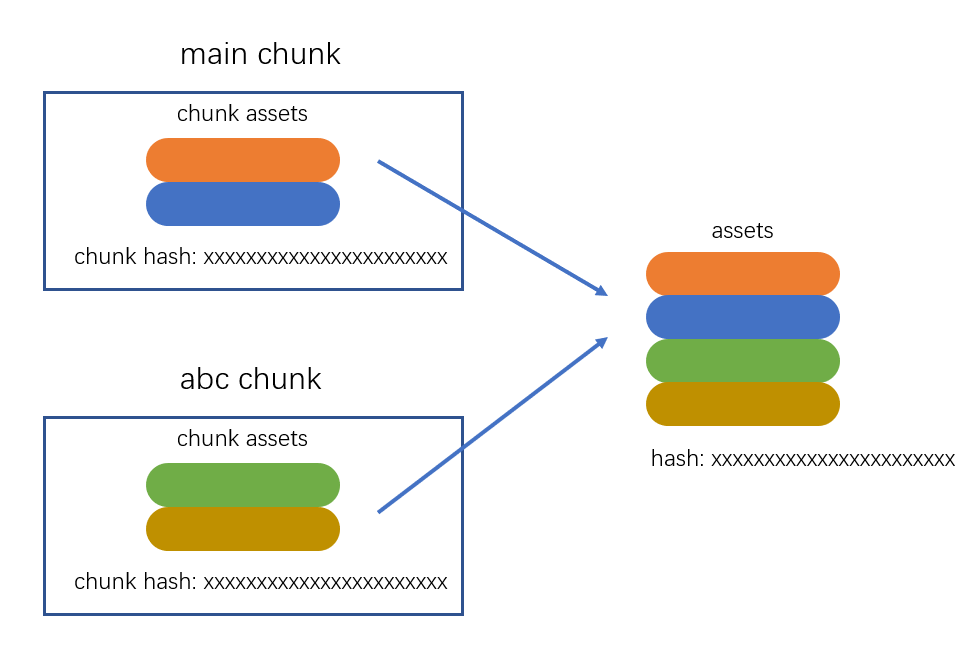

一、webpack编译过程
- webpack 的作用是将源代码编译（构建、打包）成最终代码，整个过程大致分为三个步骤，既初始化、编译、输出


二、初始化
此阶段，webpack会将CLI参数、配置文件、默认配置进行融合，形成一个最终的配置对象。
对配置的处理过程是依托一个第三方库
yargs完成的此阶段相对比较简单，主要是为接下来的编译阶段做必要的准备，目前，可以简单的理解为，初始化阶段主要用于产生一个最终的配置
三、编译
3.1 创建chunk
- chunk是webpack在内部构建过程中的一个概念，译为
块，它表示通过某个入口找到的所有依赖的统称，根据入口模块（默认为./src/index.js）创建一个chunk

- 每个chunk都有至少两个属性
name：默认为main，chunk有名字就代表可能同时存在多个chunk
id：唯一编号，开发环境和name相同，生产环境是一个数字，从0开始
3.2 构建所有依赖模块

- AST 树形结构遍历，找到所有依赖
- AST在线测试工具：https://astexplorer.net/
记录依赖的完整路径保存到dependence，可以把dependencies看成数组，里面存放模块的完整路径，如[“./src/a.js”,”./src/b.js”]
替换依赖函数
// 替换前 |
- 简图

3.3 产生chunk assets
在第二步完成后，chunk中会产生一个模块列表，列表中包含了模块id和模块转换后的代码
接下来，webpack会根据配置为chunk生成一个资源列表，即
chunk assets，资源列表可以理解为是生成到最终文件的文件名和文件内容


3.4 合并chunk assets
- 将多个chunk的assets合并到一起，并产生一个总的hash

四、输出
- 此步骤非常简单，webpack将利用node中的fs模块（文件处理模块），根据编译产生的总的assets，生成相应的文件。

五、总过程

六、涉及术语
module：模块，分割的代码单元，webpack中的模块可以是任何内容的文件，不仅限于JS
chunk：webpack内部构建模块的块，一个chunk中包含多个模块，这些模块是从入口模块通过依赖分析得来的
bundle：chunk构建好模块后会生成chunk的资源清单，清单中的每一项就是一个bundle，可以认为bundle就是最终生成的文件
hash：最终的资源清单所有内容联合生成的hash值
- hash：一种算法，具体有很多分类，特点是将一个任意长度的字符串转换为一个固定长度的字符串，而且可以保证原始内容不变，产生的hash字符串就不变
- chunkhash：根据所有chunk assets的内容生成的一个hash字符串